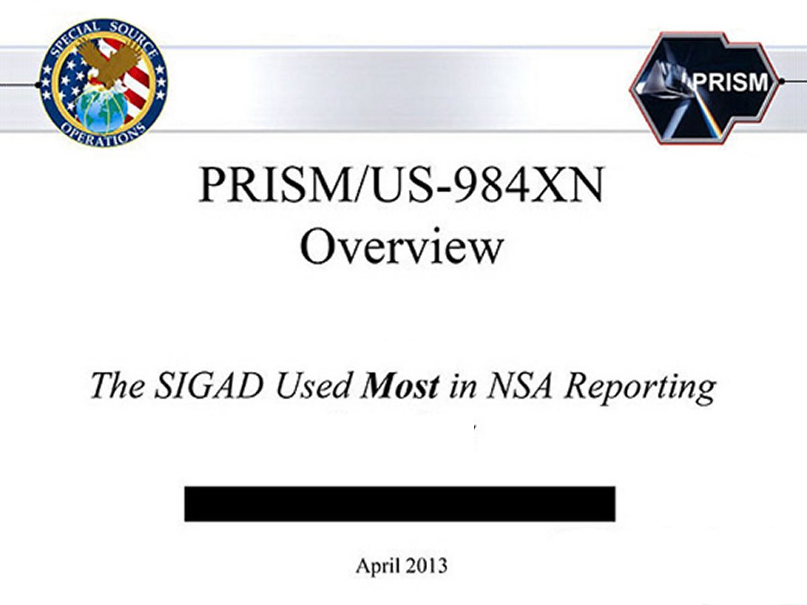

27 Statements by Edward Snowden about PRISM and the NSA.
(Would you be willing to risk what this 29 year-old man has?)

In the video he made where he announced the massive intelligence gathering program called PRSIM and what it consisted of, Edward Snowden made 27 statements about the program and about the NSA that every American should hear for themselves. Things they should weigh in their own minds regarding what all of this means. Here are those statements. Snowden did not reveal any actionable intelligence about any terorists are those wanting to attack America from without. He did reveal what is secretly going on from within, that this administration and others did not want you to know about regarding things they are gathering about each and every one of us.
- "The majority of people spend some time interacting with the Internet, and Governments are abusing that in secret to extend their powers."
- "I believe that at this point in history, the greatest danger to our freedom and way of life comes from the fear of State powers kept in check by nothing more than policy documents."
- "The government has granted itself power it is not entitled to. There is no public oversight. The result is people like myself have the latitude to go further."
- "I can't in good conscience allow the US government to destroy privacy, internet freedom and basic liberties for people with this massive surveillance machine they're secretly building."
- "The NSA has built an infrastructure that allows it to intercept almost everything."
- "With this capability, the vast majority of human communications are automatically ingested without targeting. If I wanted to see your e-mails or your wife's phone, passwords, phone records, credit cards, all I have to do is use intercepts."
- "Any analyst at any time can target anyone. Any selector, anywhere. I, sitting at my desk, had the authorities to wiretap anyone, from you or your accountant, to a federal judge."
- "The NSA specifically targets the communications of everyone. It ingests them by default. It collects them in its system and filters them and analyzes them and measures them and it stores them."
- "When Senators Wyden and Udall asked about the scale of this, the NSA said it did not have the tools to provide an answer. We do have the tools. I have maps showing where people are scrutinized. We scrutinize America itself, more than we do the Russians."
- "They are intent on making every conversation and every form of behavior in the world known to them."
- "You don't have do anything wrong, you simply have to fall under suspicion, even by a wrong call, and then they can use this system to scrutinize every decision you've ever made, every friend you've ever talked with, and attack you on that basis."
- "Allowing the U.S. government to intimidate its people with threats of retaliation for revealing wrongdoing is contrary to the public interest."
- "Everyone everywhere now understands how bad things have gotten — and they’re talking about it. They have the power to decide for themselves whether they are willing to sacrifice their privacy to the surveillance state."
- "I do not want to live in a world where everything I do and say is recorded. That is not something I am willing to live under."
- "I don't want to live in a world where there's no privacy, and therefore no room for intellectual exploration and creativity."
- "I have no intention of hiding who I am because I know I have done nothing wrong."
- "I had been looking for leaders, but I realized that leadership is about being the first to act."
- "There are more important things than money. If I were motivated by money, I could have sold this to any number of countries and gotten very rich."
- "The great fear that I have regarding the outcome for America of these disclosures is that nothing will change. People won't be willing to take the risks necessary to stand up and fight to change things."
- "I will be satisfied if the secret law, unequal pardon and irresistible executive powers that rule the world that I love are revealed even for an instant."
- "You can't come up against the world's most powerful intelligence agencies and not accept the risk."
- "I know the media likes to personalize political debates, and I know the government will demonize me."
- "We have a CIA station just up the road – the consulate here in Hong Kong – and I am sure they are going to be busy. And that is a concern I will live with for the rest of my life, however long that happens to be."
- "I understand that I will be made to suffer for my actions, and that the return of this information to the public marks my end."
- "There’s no saving me."
- "The only thing I fear is the harmful effects on my family, who I won't be able to help. That's what keeps me up at night."
- "I do not expect to see home again."
This is chilling testrimony from a man who is now being hunted to the ends of the earth by the US Government. Clearly, Snowden did not do this to get rich, or to find fame or notoriety. I believe he did it because of the reasons he states above. By the way, Edward Snowden believed in Barack Obama...but had his eyes opened as he worked for Obama's NSA which has begun implementing Obama's agenda.
Read: EDWARD SNOWDEN, PRISM, & THE NSA
FIGHTING BACK AGAINST THE ENCROACHING TYRANNY
Former Director of NSA Intelligence reveals the full extent of PRISM capabilities. MUST SEE!
Another William Benny interview about PRISM and the NSA
AMERICA AT THE CROSSROADS OF HISTORY
OBAMA'S DISASTEROUS LIST OF FIRSTS
THE PROGRESSIVE/LIBERAL TRAIN WRECK
WALKING AL QUIDA IN BENGHAZI
FAST AND FURIOUS: MURDERGATE
|